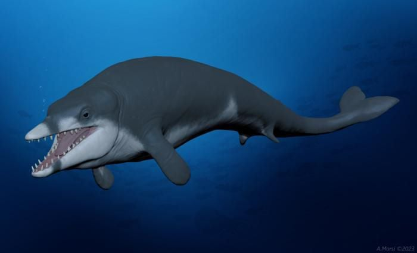

Basilosaurus hunts fish. De Agostini via Getty Images
Among the most impressive of these new beasts were the basilosaurids. Named after Basilosaurus, one of the first fossil whales ever discovered, these oceanic carnivores were seagoing success stories. And a pair of recent fossil discoveries underscores how these early whales opened up a variety of niches long before the earliest dolphins or baleen whales would evolve.
Basilosaurus and its close relatives have long stood as epitomes of aquatic adaptation in the epic story of whale evolution. The ancestors of the first whales lived on land, but about 55 million years ago early whales were spending more time in the water. They gained adaptations such as denser bones that acted as a kind of ballast. Over millions of years, a variety of early whales lived between the shore and the open ocean, with some lineages becoming ever more adapted to a life spent entirely in the water. By 41 million years ago, whales included the basilosaurids—sinuous forms with sharp teeth, long bodies and only the vestiges of their hind legs sticking out from their sides.”
Against the background of aquatic adaptation, Basilosaurus has long stood out as an iconic whale no longer tied to the shore. The beast became a scientific darling because of a rich fossil record. “Much of the emphasis on Basilosaurus happens to be because we’ve known about this particular fossil species for over 175 years, and from relatively complete skeletons,” says Smithsonian National Museum of Natural History whale researcher Nicholas Pyenson.
Decades of research has affirmed that Basilosaurus was an impressive predator, using piercing and slicing teeth to feed on large fish, sharks and even other whales. But Basilosaurus only represents one part of what paleontologists are beginning to recognize as a much more significant moment in whale evolution, in which Basilosaurids included some of the largest and smallest fossil whales known.
In August of this year, paleontologists described Percetus an absolutely massive basilosaurid. The whale may have been the largest animal of all time, a giant that rivals or even exceeds the proportions of today’s blue whale. Paleontologists never expected that basilosaurids, still early in the whale evolutionary story, would have evolved such stupendous size. A week later, a different team of paleontologists described Tutcetus another basilosaurid that was wholly different. Tutcetus was dolphin-sized, the smallest basilosaurid yet known.
Tutcetus swimming Illustration by Ahmed Morsi / Hesham Sallam - Mansoura University Paleontology Center
Up until recently, University of Liège paleontologist Rebecca Bennion says, basilosaurids were thought to be large, unspecialized predators. “Their skulls were certainly very similar, all suggesting predation at higher trophic levels,” she says, meaning that basilosaurids were hunting large prey that were likely formidable carnivores themselves. Her own research into Basilosaurus and other fossil whales found that these carnivores were similar to giant seagoing reptiles like Mosasaurus, sharing long and low skulls full of gripping teeth, a case of convergent evolution between apex predators over 25 million years apart. But now Tutcetus and Perucetus change that perception. Because of their difference in sizes and anatomy, the whales indicate that basilosaurids were not all rapacious hunters of large prey.
The new whales aren’t part of a linear progression of early whales from sea to land, but part of a varied and many-branching family. “There is a misconception in some of the ways that we tell the story of whale evolution,” Pyenson says. Rather than increasing adaptation to the water in a linear fashion, early whales are best looked at as an array of evolutionary “experiments.” And basilosaurids hold an important place in this story of evolutionary transformations.